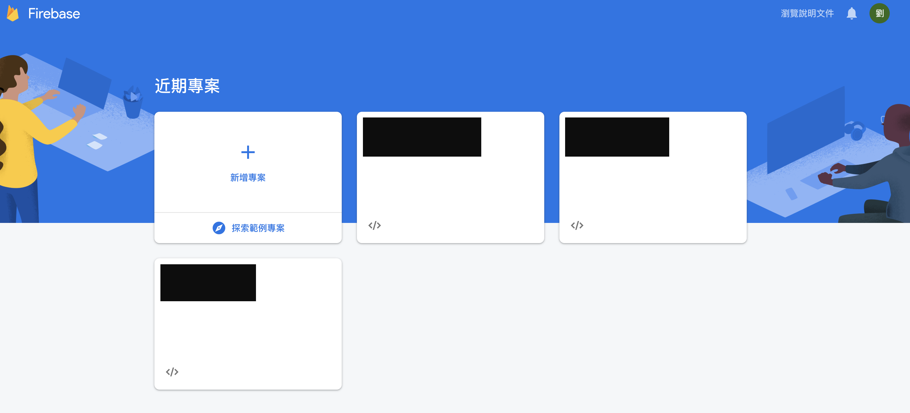
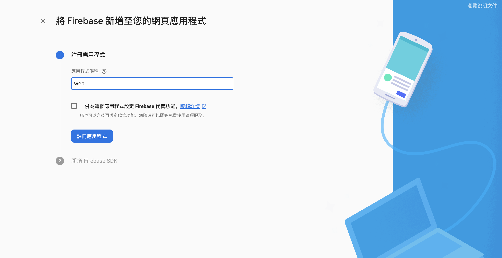
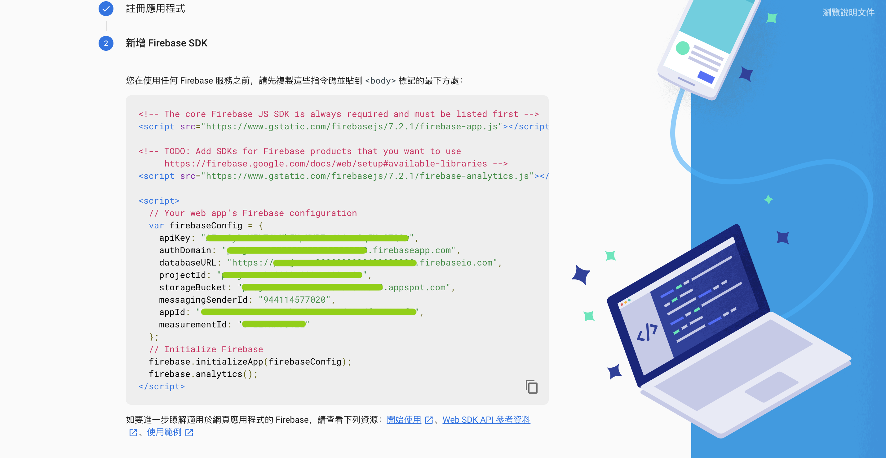

終於有機會來使用 firebase，今天會從專案的建立開始進行。
Let's get started!
STEP1 : 建立專案
STEP2 : 輸入專案名稱
STEP3 : 選擇 WEB
STEP4 : 取一個應用程式暱稱（ 只有自己或團隊知道 ）
STEP5 : 獲取一組 SDK
STEP6 : 在網頁中引入需要的 js 檔
<script src="https://www.gstatic.com/firebasejs/7.2.1/firebase-app.js"></script>
<script src="https://www.gstatic.com/firebasejs/7.2.1/firebase-analytics.js"></script>
STEP7 : 在 body 的後面加入那串 sdk
// Your web app's Firebase configuration
var firebaseConfig = {
apiKey: "",
authDomain: "XXXXXXXXXXXXXXXX.firebaseapp.com",
databaseURL: "https://XXXXXXXXXXXXXXXX.firebaseio.com",
projectId: "XXXXXXXXXXXXXXXX",
storageBucket: "XXXXXXXXXXXXXXXX.appspot.com",
messagingSenderId: "",
appId: "",
measurementId: ""
};
// Initialize Firebase
firebase.initializeApp(firebaseConfig);
firebase.analytics();
STEP8 : 可以開始玩文件，我先用之前的東西去改，目前只會用寫入跟讀取兩個功能
var db = firebase.firestore();
var ref = db.collection('postcard'); // postcard 為你在 firebase 中創建集合的名字
var isInitSoundRemind = true;
var cardList = []
var cardListIndex = new Date().getTime();
//onload的時候先 get data
$(document).ready(function () {
getdata(true);
});
//function getdata
function getdata(isFirst) {
var remainder = 0;
if (cardList.length > 0) {
remainder = cardList.length % 3
}
var docRef = db.collection("postcard");
docRef
.where("updatedAt", "<", cardListIndex)
.orderBy('updatedAt', 'desc')
.limit(3 - remainder) // 一次補滿一排 或新增一排 (3封)
.get()
.then(querySnapshot => {
if (!isFirst && querySnapshot.empty) {
//alert('已讀取完所有資料')
$('#read-button').hide();
} else {
querySnapshot.forEach(doc => {
var card = doc.data()
// console.log('query new data', card);
cardList.push(card)
cardListIndex = card.updatedAt
});
reloadCardList(cardList)
}
})
}
//當有新的資料進 firebase
function storedata(src) {
if (src) {
var params = {
img: src,
// message: message,
// cardType: cardType,
updatedAt: new Date().getTime(), // firebase.firestore.FieldValue.serverTimestamp()
}
// 新增集合，目前隨機亂數
ref.add(params).then(() => {
// console.log('set data successful');
cardList = [params].concat(cardList)
reloadCardList(cardList)
});
}
}
//資料也同步更新
function reloadCardList(cardList) {
var newDom = ''
cardList.forEach((value, index) => {
if (index % 3 === 0) {
newDom += `<div class="card-row">
<div class="line"></div>`
}
newDom += `<div class="card-wrapper">
<div class="background type-${value.cardType}"></div>
<img src="${value.img}"></img>
<div class="peg">
<img src="./theme/images/letter/peg.png" alt="">
</div>
</div>`
// card popup
// newDom += `<div id="card-detail-${index + 1}" class="modal card-detail type-${value.cardType}">
// <div class="text">${value.message}</div>
// <div class="name">${value.name}</div>
// <a href="#" rel="modal:close" class="back-button">> BACK</a>
// </div>`
if (index % 3 === 2 || index === cardList.length - 1) {
newDom += `</div>`;
}
})
$('#card-list').html(newDom)
}